.png)
上元积年法是中国古代历法中推算上元的一种方法，“上元”是古人设想出来的“完美宇宙起点”，是指在远古时代，
年、月、日、时的起始时刻均为甲子日的夜半，且此时日月合璧、五星连珠，是一种理想的起始状态。所有天文现
象都在这个起点上完美对齐，就像把所有闹钟同时调到零点一样。然后从这个时刻开始，通过计算从上元到所求年
份的积年数，再结合各种天文周期，来推算出当年的天文现象和日期。
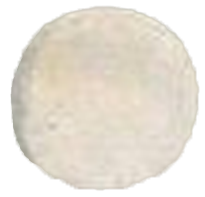
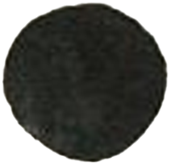
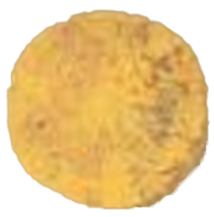
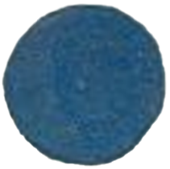
点击展开历代历法
汉代《大衍历》
唐代《三统历》
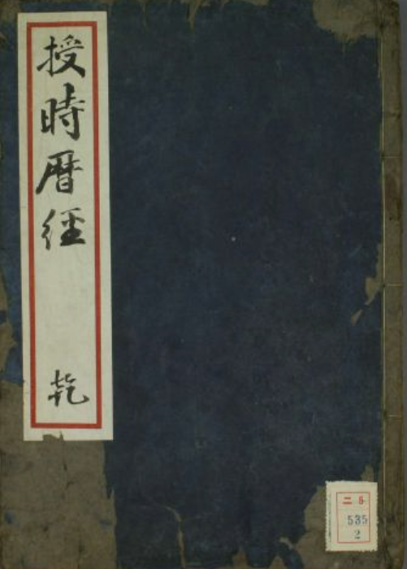
元代《授时历》
输入值
• 回归年长度：即地球绕太阳公转一周的时间，不同历法对回归年长度的测定有所不同，
例如《授时历》取回归年长度约为 365.2425 日。
• 朔望月长度：指月球绕地球公转相对于太阳的平均周期，古代历法中也有不同取值，一般约为 29.5306 日。
• 干支周期：通常为 60，代表干支纪年的一个循环周期。
• 所求年份：用户希望计算上元积年到该年份的相关数据。
• 特定天文现象周期：如五星会合周期等，不同行星的会合周期不同，需要根据具体情况输入。
输出值
• 上元积年数：从上元时刻到所求年份的年数。
• 所求年份冬至时刻与上元时刻的时间差：用于确定该年份冬至的具体时间。
• 所求年份朔日时刻与上元时刻的时间差：用于确定该年份朔日的具体时间。
• 所求年份干支纪年起始时刻与上元时刻的时间差：用于确定该年份的干支纪年。
上元积年数：
冬至时刻差：
朔日时刻差：
干支纪年起始时刻差
日月相交：拖动小球使其重合
根据历法书，太阳和月亮差不多要相交了
古代中国历法中，确定每月第一天（初一、朔日）的计算方法有平朔和定朔两种。
以日、月黄经度相等（日月合朔）的时刻定为朔，以这天为朔日，作为每月的第一天（初一），称定朔。
取月的平均日数为29.5日，大月30日，小月29日，大小月相间，用这种方法定出的每月初一日叫“平朔”。
但是由于月行速度在一近点月内时时变动，日行速度在一回归年内也有快慢，日月合朔就未必在平朔的初一。
定朔考虑了太阳运行和月球运行的不均等性，将含有真正“朔”的当天作为每月的开始，反映了真实的天象。
定朔较平朔更为精确。南朝宋何承天首倡，唐初始采用。
根据观测，朔望时刻要来了
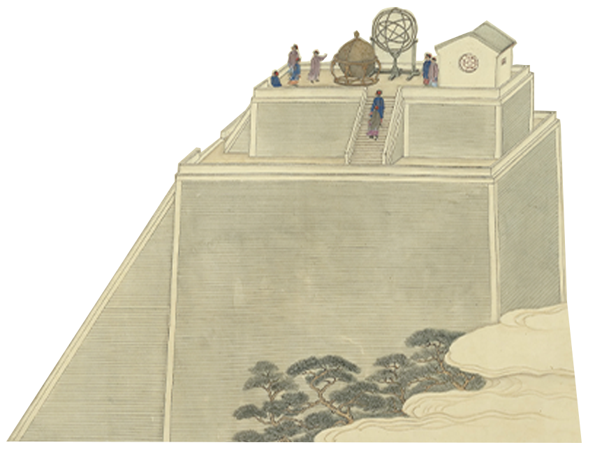
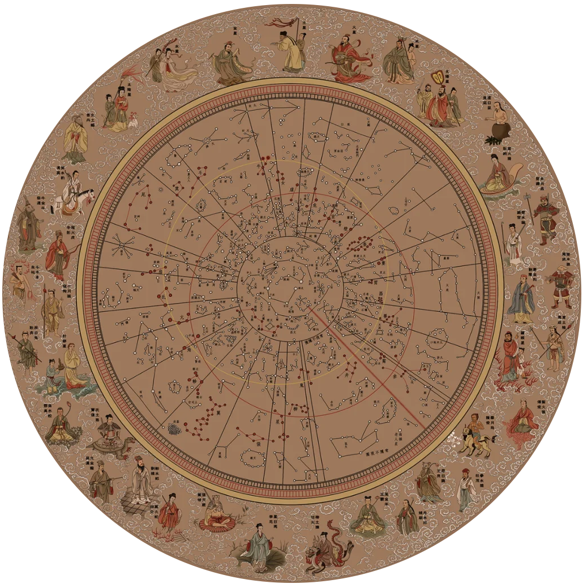
定气，是一种确定节气的制度，以太阳在黄道上的位置为标准，自春分点起算，黄经每隔15°为一个节气。
在”定气“之前最初人们采用的是“平气”，把一周年按时间平分为二十四节气，从立春开始，每过15.22日就交一个新的节气。
但是实际上，太阳的周年视运动是不等速的，在各个平气之间，太阳在黄道上所走的度数并不相同。节气间的天数也是不均匀的：冬至前后太阳移行快些，两节气间只14天多；夏至前后太阳移行慢些，两节气间达16天多。
北齐张子信发现太阳视运动不均匀现象。采用定气，节气间的天数虽然多寡不一，但能表示太阳真实位置，使春分、秋分一定在昼夜平分那一天。
定气，是一种确定节气的制度，以太阳在黄道上的位置为标准，自春分点起算，黄经每隔15°为一个节气。
在”定气“之前最初人们采用的是“平气”，把一周年按时间平分为二十四节气，从立春开始，每过15.22日就交一个新的节气。
但是实际上，太阳的周年视运动是不等速的，在各个平气之间，太阳在黄道上所走的度数并不相同。节气间的天数也是不均匀的：冬至前后太阳移行快些，两节气间只14天多；夏至前后太阳移行慢些，两节气间达16天多。
北齐张子信发现太阳视运动不均匀现象。采用定气，节气间的天数虽然多寡不一，但能表示太阳真实位置，使春分、秋分一定在昼夜平分那一天。
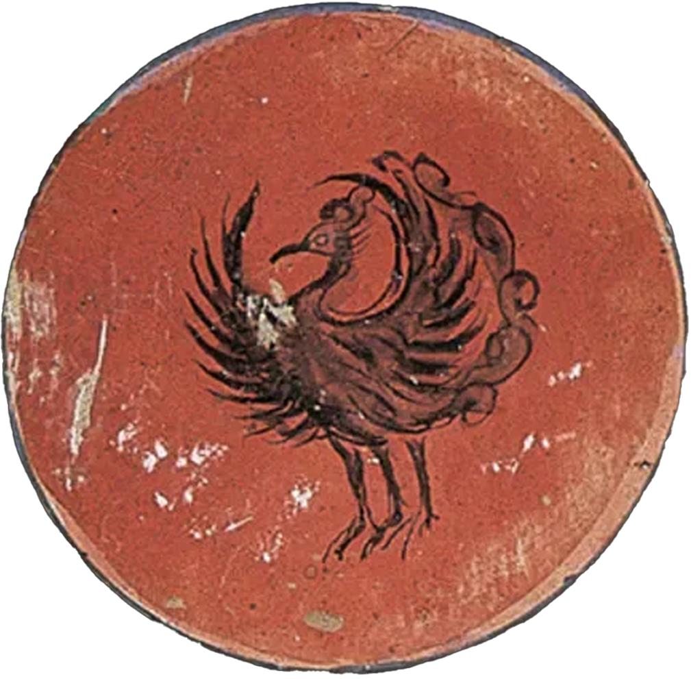
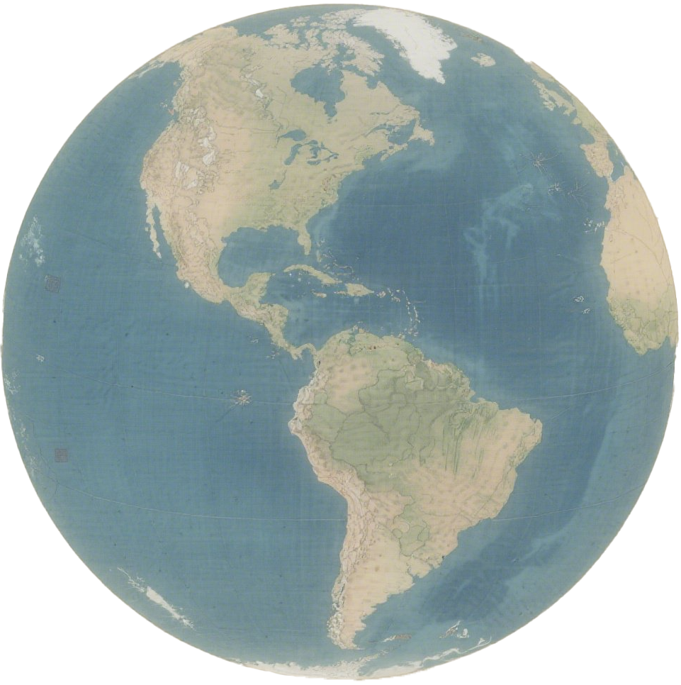
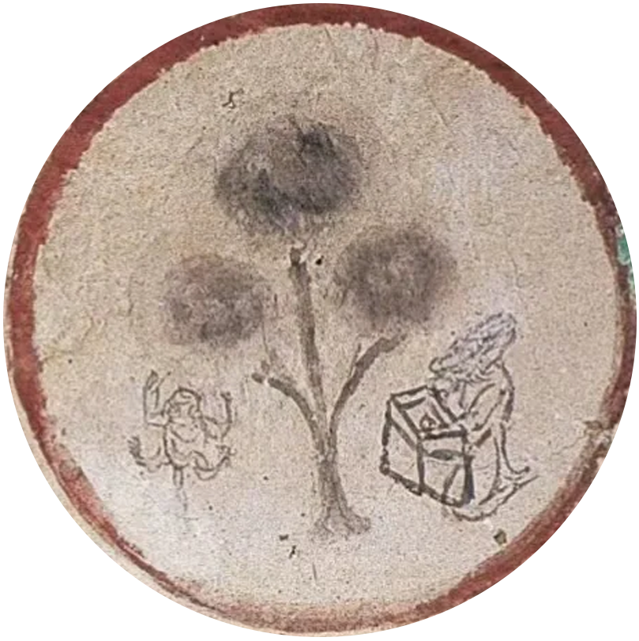
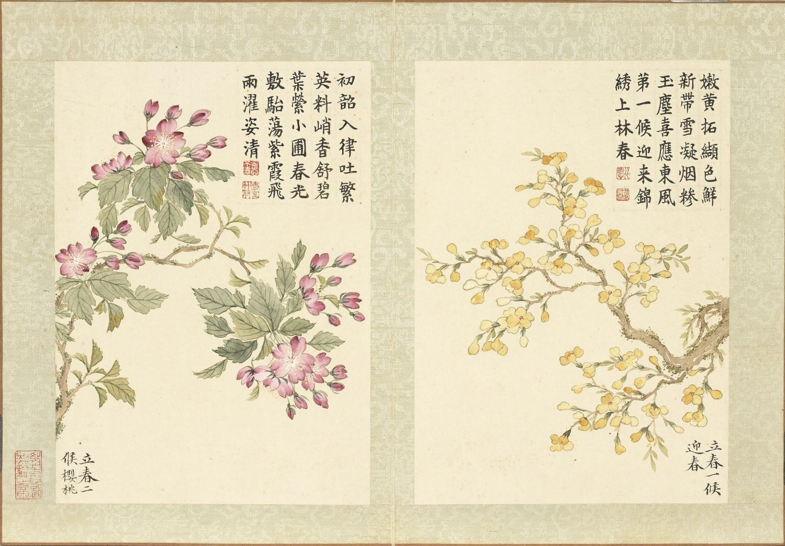
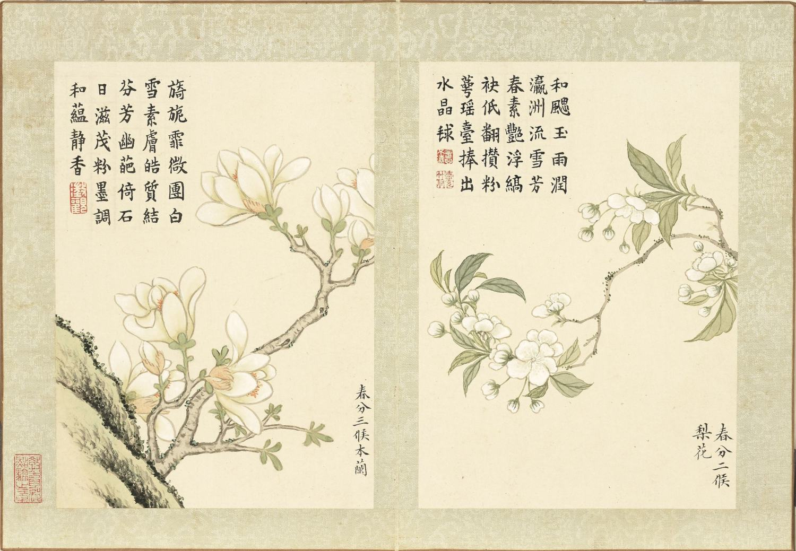
画作源于《二十四番花信风图册》
“日行一度，十五日为一节，以生二十四时之变，斗指子则冬至，音比黄钟。”——《淮南子·天文训》
“二十四节气”是中国人通过观察太阳周年运动，认知一年中时令、气候、物候等方面变化规律所形成的知识体系和社会实践，被誉为“中国的第五大发明”。
“二十四节气”起源于黄河流域，是上古农耕文明的产物，春秋时代，我国已掌握“十九年七闰”的历法制度。但是，因平年和闰年的天数相差较大，仍然不便于指导农业生产。为弥补这种缺陷，华夏先民就创造了节气，春秋时制定出仲春、仲夏、仲秋、仲冬等节气。经过不断地改进，到秦汉年间已完全确立二十四节气。
在中国古代天文学系统中，黄道是古人假想的太阳周年运行轨道。地球沿着自己的轨道围绕太阳公转，从地球轨道不同的位置上看太阳，则太阳在天球上的投影位置也不尽相同。这种视位置的移动叫做太阳的视运动。太阳在天球上的“视运动”分为两种情形：“周日视运动”和“周年视运动”。太阳的“周年视运动”轨迹就是黄道。 地球的公转在地球上人看来就表现为太阳周年视运动，其运行线路（即地球公转轨道在天球上的反应）称为黄道。黄经就是黄道上的度量坐标（经度）。按天文学惯例，以春分点为起点自西向东度量，分360度。古人把太阳黄经的360度划分成24等份，每份15度，每15度为一个节气。两个节气间相隔日数为15天左右，全年即有二十四个节气。
赤经：
赤纬：
古代早期算出木星（古称岁星）每十二年运转一周，于是出现了岁星纪年法，通行于春秋战国。
天文历学家把岁星运行的轨道分为12等分，岁星每年运行一星次，就以岁星在该年所在的部位为
岁名。
西汉刘歆作《三统历》时，发现木星运转一周不足十二年。
南北朝时期，祖冲之更进一步，对木、水、火、金、土等五大行星在天空运行的轨道和运行一周
所需的时间，也进行了观测和推算，给出了更精确的五星会合周期。
得出木星每84年超辰一次的结论，即定木星公转周期为11.858年（今测为11.862年）。并得出更
精确多五星会合周期，木星398.903日（误差0.019日），火星780.031日（误差0.094日），
土星378.070日（误差0.022日），金星583.931日（误差0.009日），水星115.880日（误差0.002日）。